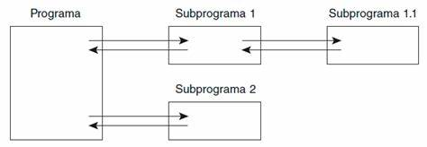
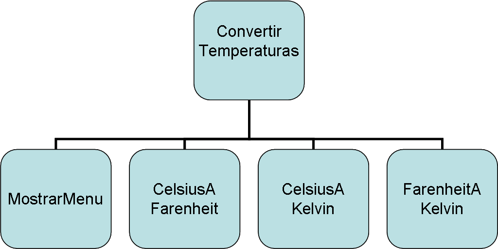
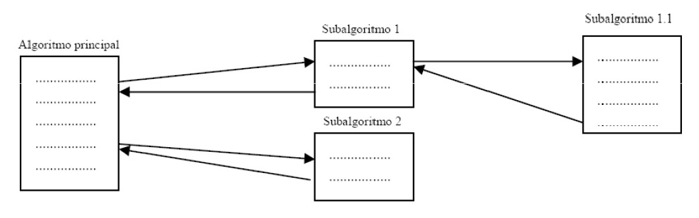
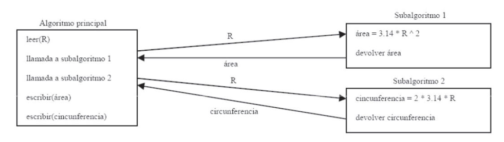

Programación Modular
Curso 2025 - 2026
Índice
1. Introducción
La programación modular es un modelo de programación que consiste en dividir un programa en módulos o subprogramas con el fin de hacerlo más legible y manejable.

Es una evolución de la programación estructurada para problemas más grandes y complejos.
Definición
La programación modular divide un problema complejo en subproblemas más sencillos, cada uno resuelto por un módulo independiente.
División de problemas
Un problema complejo es dividido en varios subproblemas más simples.
Los subproblemas pueden dividirse en otros hasta obtener subproblemas lo suficientemente sencillos.
Técnica: Divide y vencerás
Ejemplo: Programa para convertir temperaturas

Ventajas
Ventajas de la programación modular
- Reduce la complejidad de un programa
- Reutilización del código
- Mejora la claridad y legibilidad del código
- Mejora el diseño y la depuración
- Facilita el mantenimiento
- Permite la multiprogramación
2. Características
Independencia funcional
Criterios de independencia funcional
Un módulo debe cumplir los siguientes criterios para ser considerado funcionalmente independiente:
 Un módulo debe realizar una única tarea
Un módulo debe realizar una única tarea - Comunicarse lo menos posible con otros módulos
- Dividir hasta lograr independencia adecuada
Criterios
- Acoplamiento: dependencia entre módulos
- Cohesión: relación interna del módulo
Acoplamiento
El acoplamiento mide la dependencia entre módulos. Cuanto menor sea, mejor diseño.
Tipos de acoplamiento
- Datos: intercambio de datos simples
- Estampado: estructuras compuestas
- Control: flags para lógica
- Global: comparten memoria
- Por contenido: acceso directo a datos internos
Recomendación
Acoplamiento por datos es el tipo recomendado. Evita el acoplamiento global y por contenido.
Cohesión
La cohesión mide la relación interna de un módulo. Cuanto más alta, mejor.
Tipos de cohesión (de mayor a menor calidad)
| Tipo | Calidad |
|---|---|
| Funcional | ⭐⭐⭐⭐⭐ Mejor |
| Secuencial | ⭐⭐⭐⭐ |
| Comunicacional | ⭐⭐⭐ |
| Procedural | ⭐⭐ |
| Temporal | ⭐⭐ |
| Lógica | ⭐ |
| Casual | ❌ Peor |
Recomendado: Funcional, secuencial o comunicacional.
3. Estructura modular
Un módulo se compone de:
- Interfaz: entrada y salida de datos
- Implementación: operaciones internas
Desde fuera es una caja negra, concepto de abstracción.
Abstracción
La abstracción permite ocultar los detalles internos de un módulo mostrando solo su interfaz. Esto facilita la reutilización y el mantenimiento del código.
4. Funciones
- Existe un módulo principal (main)
- Gestiona subalgoritmos
- Los subalgoritmos son llamados desde un módulo padre
- Los módulos hijos devuelven resultados

Subprogramas
Los subprogramas se llaman funciones y procedimientos.
Un subprograma:
- Acepta datos de entrada
- Procesa los datos
- Devuelve resultados
El algoritmo principal construye la solución global.
Diferencias
Funciones vs Procedimientos
- Funciones: devuelven un resultado
- Procedimientos: no devuelven valor
En Java los procedimientos devuelven void. Los datos se reciben mediante argumentos.
Ejemplo
Ejemplo: cálculo del radio
Algoritmo que pide el radio de una circunferencia y devuelve:
- Área
- Longitud

Ejemplo sin funciones
Ejemplo con funciones
- Llamada a la función
Areapasando el radio como argumento. - Llamada a la función
Circunferenciapasando el radio como argumento.
5. Diagramas
Flujo de llamada entre módulos
El diagrama siguiente muestra cómo el módulo principal llama a los submódulos y cómo estos devuelven resultados:
flowchart TD
A([Inicio]) --> B[main]
B --> C[Area\nradio]
B --> D[Circunferencia\nradio]
C --> E{Devuelve\nárea}
D --> F{Devuelve\nlongitud}
E --> G[Muestra resultados]
F --> G
G --> H([Fin])
style A fill:#4CAF50,color:#fff
style H fill:#f44336,color:#fff
style B fill:#2196F3,color:#fffDiagrama de secuencia
sequenceDiagram
participant Main
participant Area
participant Circunferencia
Main->>Area: Area(radio)
Area-->>Main: devuelve área
Main->>Circunferencia: Circunferencia(radio)
Circunferencia-->>Main: devuelve longitud
Main->>Main: Muestra resultadosJerarquía de módulos
graph TD
M[Módulo Principal\nmain] --> A[Función\nArea]
M --> C[Función\nCircunferencia]
M --> E[Procedimiento\nMuestraResultados]
A --> |devuelve double| M
C --> |devuelve double| M6. Resumen de conceptos clave
| Concepto | Descripción | Recomendación |
|---|---|---|
| Modularidad | División de un programa en módulos independientes | Dividir problemas grandes |
| Acoplamiento | Nivel de dependencia entre módulos | Bajo (mejor por datos) |
| Cohesión | Grado de relación entre elementos de un módulo | Alta (funcional o secuencial) |
| Interfaz | Parte del módulo que define entradas y salidas | Clara y bien definida |
| Implementación | Lógica interna del módulo | Oculta (abstracción) |
| Función | Subprograma que devuelve un valor | Usar para cálculos |
| Procedimiento | Subprograma que no devuelve valor (void en Java) |
Usar para acciones |
| Abstracción | Ocultar detalles internos mostrando solo lo necesario | Pensar en módulos como "caja negra" |
Conclusión
La programación modular es fundamental para el desarrollo de software de calidad. Aplicar correctamente los principios de acoplamiento bajo y cohesión alta permite crear sistemas mantenibles, reutilizables y fáciles de entender.